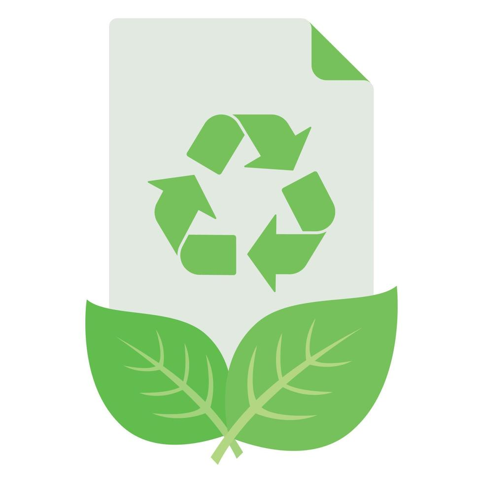

📄 O Que É a Digitalização?
A digitalização é o processo de transformar documentos físicos — como papéis, livros, formulários e arquivos impressos — em versões digitais acessíveis por meio de computadores, tablets e celulares. Ao digitalizar, informações antes restritas ao papel passam a ser armazenadas na nuvem ou em sistemas eletrônicos, permitindo fácil acesso, organização e compartilhamento. Essa prática tem ganhado força não apenas por sua praticidade, mas também por seu impacto positivo na sustentabilidade ambiental, reduzindo a dependência de recursos naturais como madeira, água e energia.
Por Que É Importante Reduzir o Consumo de Papel?
O uso excessivo de papel tem consequências ambientais sérias e muitas vezes invisíveis no cotidiano. Produzir uma única folha de papel pode consumir até 10 litros de água e liberar emissões de carbono no processo de fabricação. Além disso: A indústria de papel é uma das principais responsáveis pelo desmatamento de florestas nativas; O processo de branqueamento e tratamento do papel utiliza produtos químicos que podem poluir rios e solos; Resíduos de papel muitas vezes não são reciclados adequadamente, aumentando o volume de lixo sólido nas cidades. Reduzir o consumo de papel é, portanto, uma atitude urgente para proteger os ecossistemas naturais, conservar a biodiversidade e mitigar os impactos das mudanças climáticas.
✅ Benefícios da Digitalização
Adotar soluções digitais traz uma série de vantagens tanto para o meio ambiente quanto para a eficiência de empresas, escolas e até da rotina pessoal. Entre os principais benefícios estão:
- 🌲 Preservação de florestas e redução do desmatamento;
- 💾 Maior organização de arquivos e dados, com busca rápida e categorização inteligente;
- 🚫 Eliminação da necessidade de espaços físicos para arquivamento, como armários e prateleiras;
- ⏱️ Agilidade no acesso a informações, de qualquer lugar e a qualquer momento;
- 💸 Redução de custos operacionais, como impressão, tinta, papel e transporte de documentos;
- 🔒 Segurança e backup automático de arquivos, protegendo contra perdas e danos.
Como Começar a Digitalizar?
A digitalização pode ser implementada de forma simples e gradual, tanto por pessoas quanto por instituições públicas ou privadas. Aqui estão alguns passos práticos:
Escolha documentos prioritários: digitalize arquivos importantes, como contratos, certidões, documentos fiscais e históricos escolares.
Use ferramentas digitais: aplicativos como Google Drive, OneDrive, Evernote ou softwares de gestão documental permitem digitalizar, armazenar e organizar arquivos de forma segura.
Adote assinaturas eletrônicas: contratos e documentos legais podem ser validados digitalmente, eliminando a necessidade de impressão.
Estimule o uso de plataformas digitais: em escolas, empresas e repartições públicas, incentive o uso de ambientes virtuais para comunicação e arquivamento.
💡 Dicas Práticas para Reduzir o Uso de Papel
Mesmo sem eliminar totalmente o papel, é possível adotar hábitos mais sustentáveis no dia a dia:
- ✅ Utilize aplicativos de anotações como Notion, OneNote ou Keep;
- ✅ Leia livros, revistas e artigos em formato digital (PDF, ePub);
- ✅ Evite imprimir documentos que podem ser visualizados em tela;
- ✅ Estimule reuniões e apresentações sem materiais impressos;
- ✅ Reutilize folhas já impressas como rascunho ou para treinamentos.
O Papel da Educação e da Conscientização
A transição para uma cultura digital mais sustentável depende de informação e sensibilização. É fundamental que: Escolas incorporem temas como educação ambiental digital e tecnologia sustentável no currículo; Empresas invistam em treinamentos sobre redução de desperdícios e consumo consciente; A sociedade reconheça que a preservação ambiental começa com pequenas atitudes cotidianas. Campanhas de conscientização podem estimular mudanças comportamentais duradouras e preparar novas gerações para um futuro mais verde.
A digitalização vai muito além da praticidade — trata-se de uma estratégia eficaz para reduzir o impacto ambiental do consumo de papel. Ao transformar hábitos, adotar ferramentas tecnológicas e repensar o modo como lidamos com documentos, damos um passo importante rumo à sustentabilidade e à preservação do meio ambiente.
Com pequenas mudanças, podemos causar grandes impactos positivos.
Simular Consumo de Papel
Clique no botão abaixo para ter uma ideia de quantas árvores podem ser preservadas ao reduzir o consumo de papel.